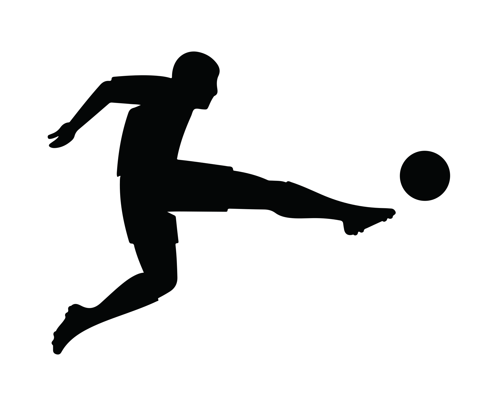

Applied
Match Generated
Top 20 Equipos
5 Grandes
FC Match Generator
Generar Partido
VS
Seleccionar equipos
Seleccionar/Deseleccionar Todos Los Equipos
Liga EA Sports (ES)
Seleccionar todos
Liga Hypermotion (ES)
Seleccionar todos
Premier League (EN)
Seleccionar todos

Serie A (IT)
Seleccionar todos

Bundesliga (AL)
Seleccionar todos
Ligue 1 (FR)
Seleccionar todos
Guardar